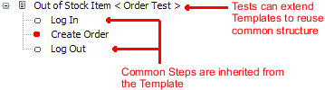
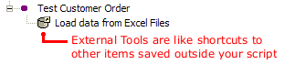
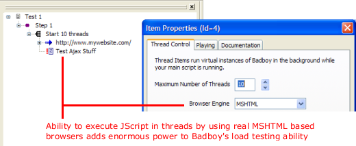
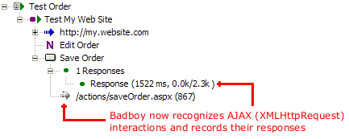
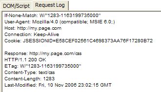
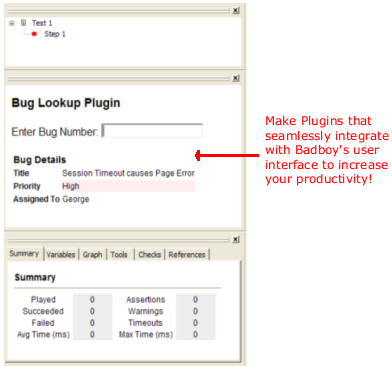
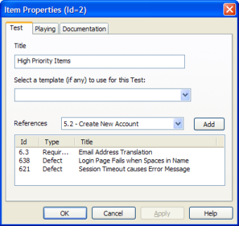

Badboy 2.0 is a major revision of Badboy to address many long standing goals and features. Your feedback has helped us understand the needs of Web Testers and Developers, and we have striven to provide a foundation for addressing these in Badboy 2.0. The following major features are brand new:
Of course, these are just the big features. There are dozens of improvements and bug fixes to make Badboy easier to use, more stable and better performing than ever - the best way to discover them all is just to try it out!
Many users told us how as test scripts get larger maintenance and complexity become significant problems. Badboy now offers a powerful solution to help in the form of Tests and Test Templates. The foundation of this change is a new Test Item that let's you more richly structure your scripts. Test Items in Badboy 2.0 have a special ability: they can inherit from Templates, another brand new feature in Badboy 2.0!
Test Templates allow you to reuse not just the content of your tests but their structure. Whenever you have a pattern that is common to many of your Tests you can save that pattern as a Template. (A good example is the common requirement to log in and out of your web site.) All your tests that follow the same outline can then simply extend the Template and only override the portions needed to customize the Test for each particular scenario. Because Templates are saved in their own file and outside of the scripts where they are used they can be shared across all your tests!

Badboy now lets you save any item in your script as an External Tool. This means it is saved outside of your script in it's own file and can be shared between all of your Badboy scripts. Similar to the existing Custom Tools feature, External Tools appear in your Toolbox and can be dragged and dropped into your script. Unlike Custom Tools, however, External Tools are each saved in their own file, which can be either in a centralized Tools folder or simply placed in the same directory as the other scripts that use the External Tool.

Badboy is now fully Unicode compatible, enabling recording and playback of web sites that were previously difficult or impossible to record correctly (such as sites containing Chinese, Hindi or Arabic characters).
Badboy can now save and load its files in a new XML based format. The new format has many advantages including the ability to edit or utilize scripts in any editor or process that can handle XML files. The binary format is still supported too since it is smaller and faster and may be preferable for large scripts. Have your cake and eat it too!
Badboy now marks items in the script that have errors and warnings so that you can easily see which parts of your script have problems.
Badboy's tabbed views used to be locked in place, forcing you to switch between them and preventing you from viewing more than one at the same time. In Badboy 2.0 you can click and drag the tabs to where ever you want them to be, enabling you to see multiple views at once.
You can now select multiple items in the Script when editing, allowing you to cut, paste, drag and drop groups of items instead of just single items as in previous versions.
In the past Badboy's threaded test engine could only fetch content and do simple assertions on the downloaded pages. Now Badboy can run background threads using a fully fledged MSHTML browser instance (the same rendering engine that drives Internet Explorer ™ and Badboy itself!). This allows the the tests to execute much more realistically, performing actions in Javascript (such as AJAX interactions) and manipulating the browser DOM.

Many new web applications are being built based on AJAX technology which use XMLHttpRequests and modification of the browser DOM using Javascript instead of full browser page transitions. Past versions of Badboy had difficulty recording and playing back activity in these applications because it did not intercept XMLHttpRequests and relied on page transitions to detect browser activity. Badboy 2.0 now has the ability to record AJAX requests when they are invoked by Navigations including their response content, size and time on playback.

In fact, Badboy 2.0 intercepts all HTTP traffic from your browser session, allowing full capture of AJAX requests and other information previously unavailable such as HTTP Response codes and header information. You can see a full HTTP trace in DOM View any time you are wondering what your browser is doing!

Badboy now has a powerful Plugin interface allowing you to write your own features to extend and enhance Badboy! Plugins are written in Javascript and have full access to an expanded API for controlling Badboy, accessing the Browser DOM, and even ability to create ActiveX controls without the need to change your browser security settings. Plugins can create HTML based views in Badboy's user interface that behave just like Badboy's other views.

Badboy now supports a feature to let you link external references (issue tracking numbers, or requirements) to the Tests you create in Badboy. By tracking references inside Badboy you can easily see which tracked features or defects are impacted by Test failures.
Badboy even includes a feature for importing headings from Microsoft Word ™ documents so that you can easily link those references to the Tests in your Badboy Script. Using Badboy's plugin API it's even possible to make your own custom importer that interfaces with your requirements or defect tracking system.
